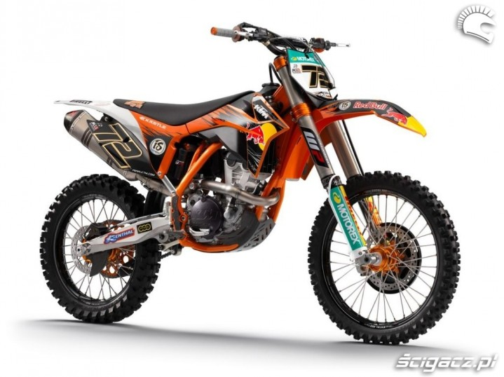
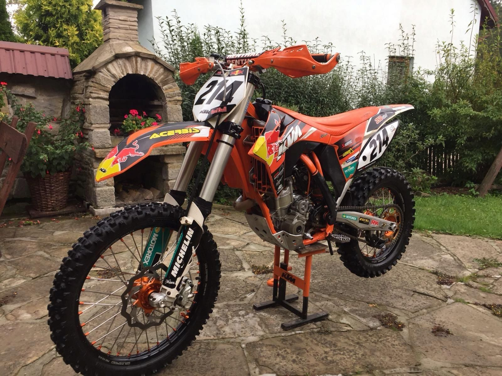
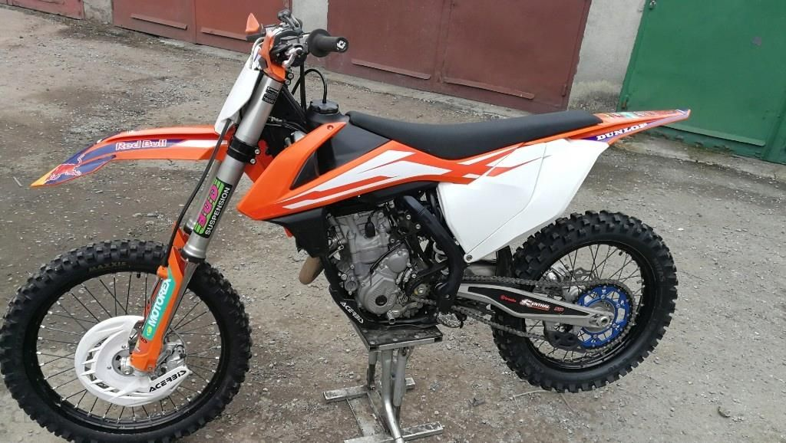

Ktm sxf 350 Six Days
WERSJA SIX DAYS - International Six Days Enduro (ISDE) (Drużynowe Mistrzostwa Świata Zespołów Narodowych[1], do 1980 International Six Days Trials (ISDT)) potocznie zwane Sześciodniówką - doroczne drużynowe zawody motocyklowe enduro rozgrywane pod auspicjami Fédération Internationale de Motocyclisme (FIM), będące, zgodnie z regulaminem FIM, dorocznym testem niezawodności motocykli i umiejętności kierowców składające się z sześciu jednodniowych etapów rozgrywanych w kolejnych dniach.
Dzięki nowej konstrukcji stalowej ramy udało się poprawić sztywność, nie tracąc nic z elastyczności.
Tylne koło prowadzi teraz zawieszenie z systemem dźwigni i lżejszym wahaczem.
Nowe elementy z plastiku: wąski zbiornik paliwa i bardziej komfortowe siedzisko.
Zupełnie nowy silnik ma 350 cm3 pojemności, 57,5 mm skoku tłoka i 88 mm średnicy cylindrów.
Seryjny elektryczny rozrusznik można zastąpić kickstarterem. Oszczędność masy – 1,5 kg.
Silnik waży jedynie 17 kg, czyli jest niewiele cięższy niż jednostki napędowe o pojemności 250 cm3.
50 KM mocy i maksymalne obroty na poziomie 13 000 obr/min – te dane robią wrażenie.
Dłuższy tłumik to ukłon w stronę ekologii.
Wrażenie poręczności potwierdza się
...podczas pierwszego okrążenia. „350” jest znakomicie wyważona, precyzyjnie trzyma się toru jazdy i daje się prowadzić z dziecięcą łatwością. W przeciwieństwie do wcześniejszych często uparcie reagujących maszyn z zawieszeniem PDS, nowy sprzęt zestrojono raczej komfortowo. Dosłownie łyka wyboje, a nierówności wręcz równa z ziemią. Mimo to przy twardym lądowaniu zawieszenie nie dobija, jak do tej pory bywało, lecz miękko osiada na amortyzatorze. To zasługa progresywnej charakterystyki zawiasu. I tłumienie, i amortyzacja są tym twardsze, im bliżej do końca skoku. Dlatego „350” można – tak jak oba identyczne pod względem podwozia czterosuwy – zestroić bardziej miękko. Modele z PDS-em wymagały twardszego ustawienia, co negatywnie odbijało się na trakcji i tłumieniu. To się jednak zmieni. Progresywna charakterystyka sprawia, że ustawienie zawieszeń pod konkretną trasę i indywidualny styl jazdy jest prostsze.
PDS dobrze działał tylko gdy w końcu wykombinowało się optymalne ustawienia. Nowe rozwiązanie jest mniej wymagające, tzn. znacznie łatwiej znaleźć właściwe ustawienia. Działa porządnie nawet gdy nie trafisz idealnie z regulacją.

Kliknij aby wrócić do strony głównej !

